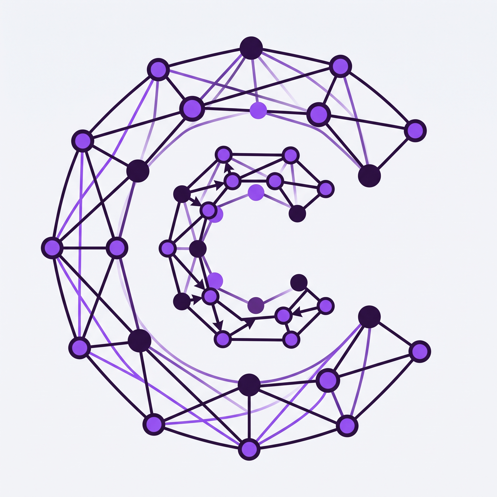

Crear nuevo grafo
Elige cuántos nodos tendrá el grafo dirigido, con n ∈ [4, 12], y cómo quieres construirlo. Los nodos se numeran 1, 2, 3… (después puedes cambiar sus nombres).

Algoritmo de la matriz de caminos, paso a paso
Elige cuántos nodos tendrá el grafo dirigido, con n ∈ [4, 12], y cómo quieres construirlo. Los nodos se numeran 1, 2, 3… (después puedes cambiar sus nombres).
Recupera un grafo desde un código QR o abre uno de tus ejercicios guardados.
Revisa el grafo antes de ejecutar el algoritmo.
Un 1 en la posición (i, j) indica una arista de i hacia j. En modo manual, haz clic en una celda para alternarla.
Apunta la cámara al código o sube una imagen que lo contenga.
Aún no hay ejercicios. Crea un grafo y usa «Guardar ejercicio».
Elige el origen y el destino, y presiona Agregar o Quitar. La arista va del origen hacia el destino.
Elige un estilo de nombres (el mismo para todos los nodos).
Toma una foto limpia de tu cuaderno o sube una imagen con el grafo dibujado.